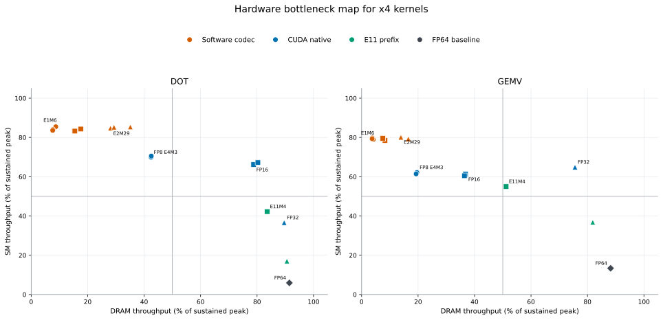
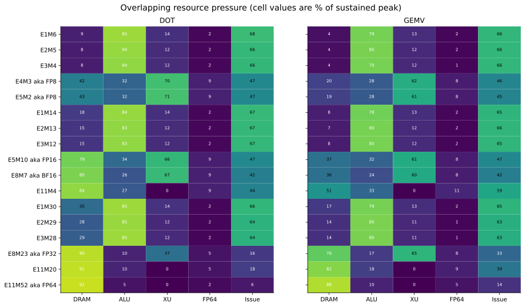
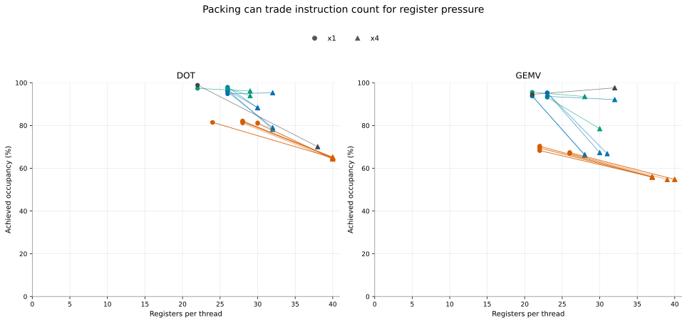

Kernel bottlenecks
Nsight Compute identifies simultaneous hardware pressure; utilization percentages overlap and are not a partition of elapsed time.
Memory versus SM pressure
Upper-left points are conversion/compute limited; lower-right points are memory limited; the upper-right region is mixed.

Which execution resources are active
This shows where conversion uses ALU or XU pipelines while FP64 accumulation and memory traffic overlap.

Register and occupancy trade-off
Lines connect x1 circles to x4 triangles and show when packing increases per-thread state enough to reduce occupancy.
